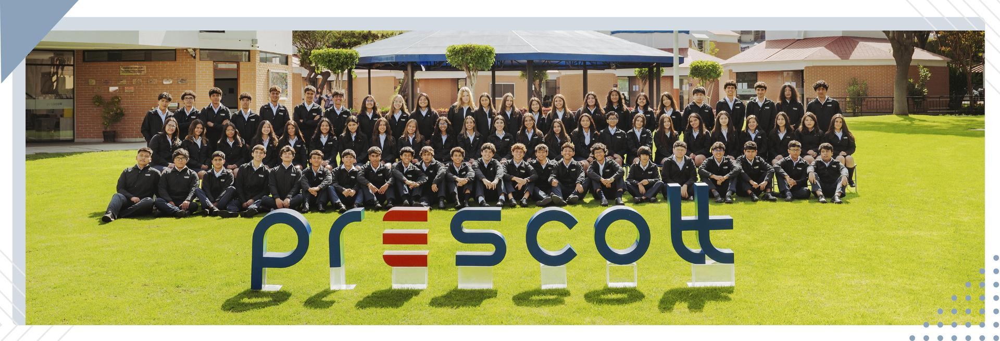

Estudiante Universitario | Ciencia de la Computación / Ingeniería
Curriculum Vitae / LinkedInEstudiante proactivo con fuerte inclinación hacia la resolución de problemas, el análisis lógico y el desarrollo académico. Con experiencia práctica en la gestión de proyectos de software y automatización utilizando Python, así como en la estructuración e investigación académica.
Me destaco por ser una excelente persona para trabajar en grupos, promoviendo la colaboración armónica, la comunicación asertiva y un constante interés por aprender nuevas metodologías que optimicen tanto el rendimiento colectivo como individual.

Orgulloso exalumno de la comunidad Prescott. Formación académica de excelencia, tradición y principios sólidos orientados al futuro.
| Asignatura | Catedrático | Red Profesional |
|---|---|---|
| Introducción a la Computación | Dr. Ernesto Cuadros-Vargas | Linkedin del Docente |
| Fundamentos de la Programación | Ms. Rosa Paccotacya | Linkedin del Docente |
| Fundamentos Matemáticos de la Programación | Ms. Fiorella Rendon | Linkedin del Docente |
| Logica I | Ms. Yahaira Byrne Rivera | Linkedin del Docente |
Sitio Personal
Sitio Personal
Sitio Personal
Sitio Personal
Sitio Personal
Sitio Personal